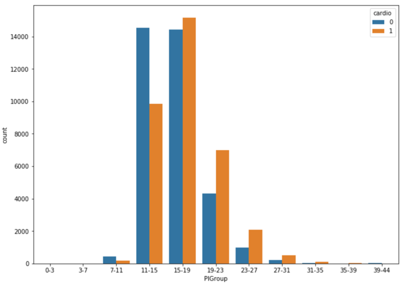

According to the World Health Organization, cardiovascular disease, such as ischemic heart disease and stroke, is the leading cause of deaths globally. “The world’s biggest killer is ischemic heart disease, responsible for 16% of the world’s total deaths” [1]. We hope people can pay more attention to their health and reduce the chances of getting heart disease. Therefore, it would be very meaningful if we can use features and some health conditions of a person to determine the signals and the probability of whether he/she has cardiovascular disease. Based on previous knowledge and what we have learned last quarter, we can achieve such a goal by implementing logistic regression and large-scale multiple testing methods on a dataset with ample information.
The dataset we use for this project is from Kaggle, called ‘Cardiovascular Disease dataset’ [2], which contains patients’ physical data collected at the moment of medical examination. The dataset has in total of 70,000 rows and 11 features, including patients’ age, height, weight, gender, systolic blood pressure, diastolic blood pressure, cholesterol, glucose, smoking, alcohol intake, physical activity, and a binary target variable of the presence or absence of cardiovascular disease. To be specific, among these features, age, height, weight, systolic blood pressure, and diastolic blood pressure are numerical variables, while the rest ones are categorical variables.
The dataset does not have any null value, or any data presented in strange format, so it’s already ready to use. The ‘cleaning’ process we actually did was conducting a few column transformations and added one column. The column transformation we performed was converting ‘age’ column (originally shown in days) into age groups from 30 to 65 years old, stepped by 5 year for the Exploratory Analysis, because having age in days makes it hard to . The column we added is called ‘ponderIndex’, which is ‘a measure of leanness of a person calculated as a relationship between mass and height’ [3], calculated by weight / height³. We create this column as we believe leanness is an important indicator of people’s health condition, which may be somewhat related to cardiovascular disease.
After data processing, we first conducted some exploratory analyses by simply making graphs.
The side-by-side bar chart above (Figure 3.1) shows the number of patients who actually has cardiovascular disease (orange bars) and the number of patients who do not have such disease (blue bars) in different age groups. We can see that for patients younger or equal to 55 years old, the majority of patients do not have such disease, but for patients elder than 55 years old, the number of patients who actually has cardiovascular disease is larger than the number of patients who do not have such disease. Hence, it indicates a positive correlation between age and cardiovascular disease that elder people are more likely to get such disease.

The side-by-side bar chart above (Figure 3.2.1) shows the number of patients who actually has cardiovascular disease (orange bars) and the number of patients who do not have such disease (blue bars) in different Ponderal Index level groups. We can see that for patients with a less than 16 PI index, the majority of patients do not have such disease, but for patients with higher PI index, the number of patients who actually has cardiovascular disease is larger than the number of patients who do not have such disease. At the same time, 11-15 is just the normal PI index range for healthy adults [4]. Such coincidence shows PI index is a good feature to predict whether a person has cardiovascular disease, especially for people with a PI index higher than the normal range (obese people).

Figure 3.2.2 shows the finding from another perspective. It’s a scatterplot of all 70,000 patients’ weights vs heights, where blue dots represent health patients and orange dots represent patients with cardiovascular disease. The red curves are PI index of 11 and 15, so the area bounded by these two red curves is the normal range. We can see that clearly there are more blue dots than orange dots in this area, while the situation is opposite in the rest of area.
The above bar plots (Figure 3.3) show the distributions of patients’ cholesterol, glucose, smoking, alcohol intake, and physical activity level. For cholesterol and glucose, value 1,2,3 mean normal, above normal, and well above normal; for smoking, alcohol intake, and physical activity, value 0,1 mean binary outcomes of do or not. The left plot is the distribution of patients who actually has cardiovascular disease while the plot at the right shows the distribution of patients who do not have such disease. Only one minor discovery is that for patients with cardiovascular disease, the proportion of patients with normal cholesterol level is much fewer than that from healthy patients, which means cholesterol may be related to the disease. Other analyzing methods need to be employed to closer examine the relationships between other variables and cardiovascular disease.
For visualization purpose, we also made a scatterplot of patients’ weights and heights (Figure 3.4), grouped by gender, where lighter pots are from females and darker pots are from males. The general pattern is quite normal that males are taller and heavier than females. However, what brings this plot to our attention is the exit of people with extremely low height and weight, given all the data is from adults, probably because we colored the data by gender. It’s not that plausible to have any adult with a weight of around 15kg or a height of around 50 cm. So, we suspect these are inaccurate data generated from mistakes while recording, and we plan to use empirical null distribution to find such outliers later.
We applied the large-scale multiple testing method by first fitting a mixture model to the data, followed by thresholding under false discovery rate. For such classification question, it’s pretty important to first find a suitable null distribution matches well with the observations. When choosing it, comparing to theoretical null, empirical null distribution is quite flexible to datasets, as it is obtained using the data itself, always resulting a better fit to the observations than theoretical null does.
We began the model by estimating the proportion of normal heights in our data, the proportion of negative values. For the mixture model, the height data will be divided into two sets: a null set S0 which contains all the normal heights(negatives) and an alternative set SA containing all the true outliers(positives). In addition, we defined f0(t) to be the probability distribution of S0 and fA(t) to be the probability distribution of SA; together with p0 and pA to be the fractions of these two distributions. Hence, the marginal density of our height data can be written as the mixture: f(t) = p0f0(t) + (1 - p0)fA(t).
We first tried to fit the data use a theoretical null distribution. According to an article published on OurWorldinData[5], human heights are normally distributed, and males’ heights and females’ heights follow separate normal distributions.
Hence, we take the above normal distribution to be f0(t) in the mixture model. However, the theoretical null distribution does not match well with our data, especially for male:
We know our data has outliers, and the source of our data is not quite clear, so we need to apply a null distribution generated by our data. Here, the concept of boxplot and interquartile range is employed. We use median to be the center of the distribution and the standard deviation was estimated from the interquartile range of our height data.
After figuring out f0(t), we were able to estimate the value of p0. We estimated p0 using least squares estimation. Only considering the null part, our mixture model can be simplified as: f(t) = p0f0(t) + error, p0 would be estimated by minimizing the error, which can be proved to be the exponential of the mean of the differences between f(t) and f0(t). Figure 4.1.5 shows the steps.
We got a final p0 of 0.945 for female with a standard deviation of 0.078 and 0.901 for male with a standard deviation of 0.084.
After calculating the p0(s) for both women and men, we are ready to explore the thresholds and their false discovery rate. False discovery rate is the proportion of wrong discovery among all the discoveries, also can be known as the rate of type 1 errors. In our problem, false discovery rate indicates the proportion of good data (normal heights) out of the outliers we discovered. Controlling that rate can ensure the value of our discoveries. We can estimate the false discovery rate for each threshold by dividing the expected number of false positives over total obtained positives under that threshold. Here are the four plots for false discovery rate and false positive rate:
We think a false discovery rate of 10% is acceptable here. If that rate is set to be too low, even though we are not excluding lots of good data, we will fail to discover a number of true outliers. Based on this criterion, the women upper bound is 186 cm and lower bound is 137cm; men upper bound is 203cm and lower bound is 144cm. Then, we can conduct further analysis on data without outliers.
Since the entire dataset have 12 features, we decide to first determine the combination of features we will use for the Regression model. By using the correlation function in python, we are able to find the correlation between ‘cardio’ which indicates whether the person has the disease and the rest of the features as shown in Figure 4.3. Using a list of threshold of [0.002, 0.005, 0.01, 0.05, 0.1, 0.2], we have generated 6 combinations of features for testing. After applying the different combinations of features to the Regression model, we get the accuracy score for each combination. Our final selection is the combination with the highest accuracy score, and it contains features of ['age', 'cholesterol', 'weight', 'gluc', 'ap_lo', 'ap_hi', 'gender', 'alco', 'height', 'smoke', 'active'].

When training the Logistic Regression model with training data and making predictions on the test data, we get an accuracy score of 0.7187, which means 71.87% of the people in the test data are predicted correctly on whether they have Cardiovascular disease. But we know that the accuracy score of 0.7187 isn’t so great for a prediction model, so we decide to variate the detection threshold of the model and find different the balance between Type I and Type II errors to gain better performance. This first model is also set to be the baseline model for the project.
Therefore, in order to improve our baseline model, we generate a list of detection thresholds from 0.1 to 0.9 with a step of 0.01 for the model. While testing the model with different detection thresholds, we also record the True Positive Rate, False Positive Rate, and False Discovery Rate for further analysis. The 45 degree line represents where the rates for the default threshold (0.5) lays.

These graphs show how the relationship between TPR, FPR, FDR and the detection threshold. The purpose of graphing them out is to find the point where we will find balance between True Positive Rate, False Positive Rate, and False Discovery Rate. Usually this point is in somewhere around the top left point of the curve. Based on the context of our model, which is to identify people who have cardiovascular disease, we want a high detection power which means we don’t want to miss anyone that have the disease even in the price of falsely diagnosing the patient. Therefore, the detection threshold we want to choose should produce a high TPR, and somewhat low or medium FPR and FDR. So we believe the detection threshold of .41 is close to the point we are looking for; it produces a TPR of .81 and accuracy score of .70, and FPR and FDR around .35.
As a result, from the original dataset, we successfully removed 820 outliers out of the 70000 observations by applying the FDR and FPR method to find the upper and lower bound. Even though our Empirical Null method was not a perfect fit to our dataset since p0 was estimated to be close to 1, we still got a decent model that produces a good balance between TPR, FPR, and FDR at the detection threshold of .41. Ultimately, our final product is a Logistic Regression model that predicts whether a person has Cardiovascular disease with a focus on relatively high detection power (TPR of 0.81, FPR of 0.40, and FDR of 0.33).
When choosing the upper and lower bound for our data, we had to use the FDR and FPR graph to subjectively determine the upper and lower bound for both male and female height in order to eliminate outliers, since our p0 estimation for the empirical null was not entirely accurate. Moreover, our model FDR is sometimes over 1, which is not quite correct due to our naïve empirical null estimation method.
Thus, for future improvement, we have to gain a much better understanding of the data collection process of this dataset so that we can have more background information on figuring out the outlier detection strategy; but on Kaggle, we were not able to find any contextual information. Most importantly, we will have to use more complex method to estimate the empirical null so that it will be a much better fit to the dataset.
[1]: WTO, The top 10 causes of death, 9 December 2020, https://www.who.int/news-room/fact-sheets/detail/the-top-10-causes-of-death.
[2]: Svetlana Ulianova, Cardiovascular Disease dataset, https://www.kaggle.com/sulianova/cardiovascular-disease-dataset.
[3]: Wikipedia, Corpulence index, https://en.wikipedia.org/wiki/Corpulence_index
[4]: Hanna Pamuła, Ponderal Index Calculator, 23 October 2018, https://www.omnicalculator.com/health/ponderal-index.
[5]: Max Roser, Cameron Appel and Hannah Ritchie (2013) - "Human Height". Published online at OurWorldInData.org, https://ourworldindata.org/human-height.